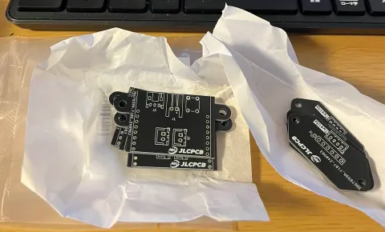

ロボットが進化！
2024/9/18 🖊たびと
今回のスポンサー
前回と同様、今回もロボットの改良に必要なプリント基板の作成を「JLCPCB」にサポートしていただきました。JLCPCBは中国のプリント基板を製造する企業で、基板を安く注文でき、早く到着するのが特徴です。
ちょっと基板がほしいときあるのですぐに納品していただけるので助かります。おもしろそうなキャンペーンしていたので載せておきます。
↓興味がある方はタップして日本語版ホームページへ↓

みなさんこんにちは。いま大学生なので夏休み中ということでロボットの製作を頑張っています。今回は、ロボットのカメラ部分の変更を行いました。 以前まで私たちのチームは円錐型のミラーなど用いて全方位をカメラで見渡す方法でボールの探索を行っていました。 しかし、使用していたミラーの精度や、角度の関係で、遠くのボールを見つけることができませんでした。そこで、ロボットのカメラ部分の仕様をおもいっきり変更することにしました。
変更箇所
ミラーでの全方位の探索が難しかったので、カメラを複数台載せて直接ボールを見ることにしました。真横から前方の方向は魚眼レンズをつけたOpenMV
 真横から後ろは片側ずつ2台のM5stack unitvv m12で行うことにします。
そのため、プリント基板も
真横から後ろは片側ずつ2台のM5stack unitvv m12で行うことにします。
そのため、プリント基板も
・OpenMV取付用のプリント基板
・無線通信モジュール用プリント基板
の改良が必要となったため、JLCPCBにプリント基板の発注をしました。
基板の設計
基板を設計しました。今回の回路はとてもシンプルですが、ロボット間の通信や、カメラを扱う大切な基板なので配線などには細心の注意を払って作りました。
基板到着
いつも基板はパッケージにきれいに包装されているのですが、今回は包装だけではなくて紙までまかれていて、奇麗に包装されていました！  さっそくこれを使ってロボットを組み立てて行きたいと思います。 完成したロボットがこちらです。魚眼レンズの固定やカメラの固定は3Dプリンターで印刷したものを使用しました。とてもいい感じのロボットになりました！
動作確認
魚眼レンズから見た景色がこちらです。ロボットからしっかり景色が見えていて、遠くのボールでも追うことができそうです。 また、動作はこんな感じです。まだM5stack unitvの方のプログラムをかいていないので、真横はボールが見えないのですが、今のところしっかりボールを追跡できています。
無線通信についてはまた次のブログで紹介します。ロボットがボール追跡した！ pic.twitter.com/2tBSnrBWwe
— たびと！🐙ー定理 (@tabito1419) September 16, 2024
最後に
今回もJLCPCBで注文しました。ブログ内でも取り上げましたが、基板の包装はしっかりしているので質もばっちりです。ぜひみなさんもJLCPCBで発注してみてくださいね。
↓ホームページへ↓